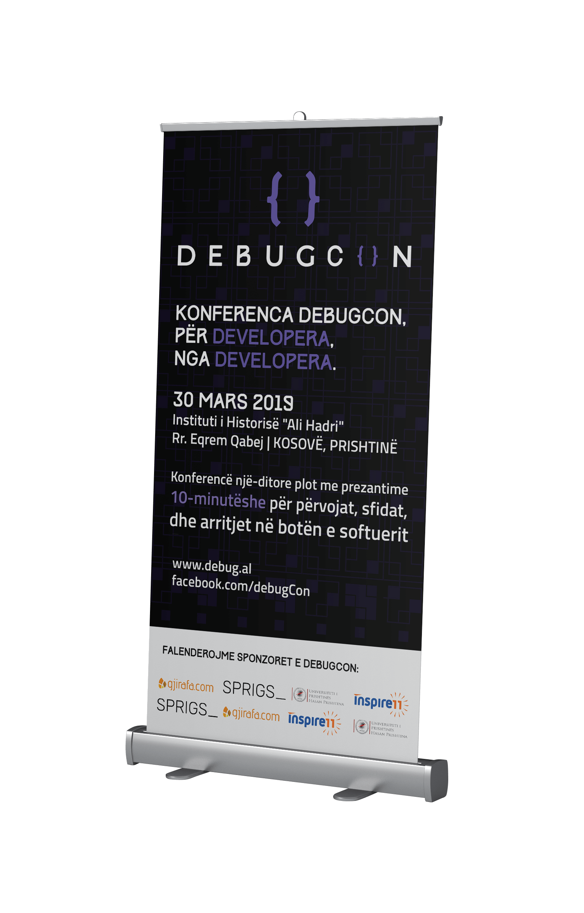
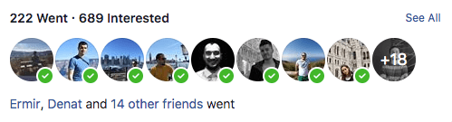
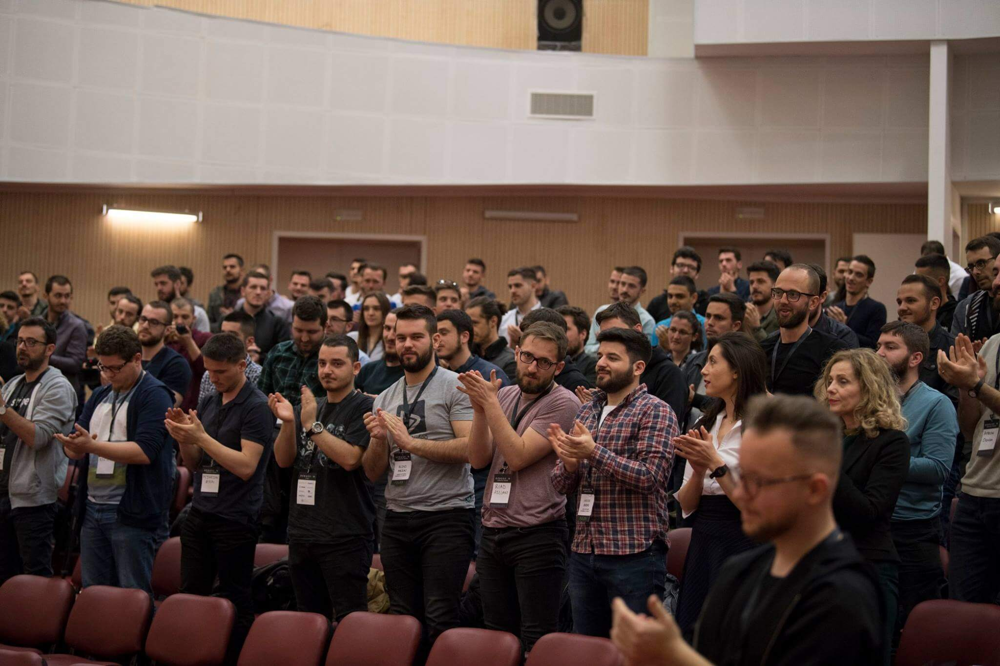
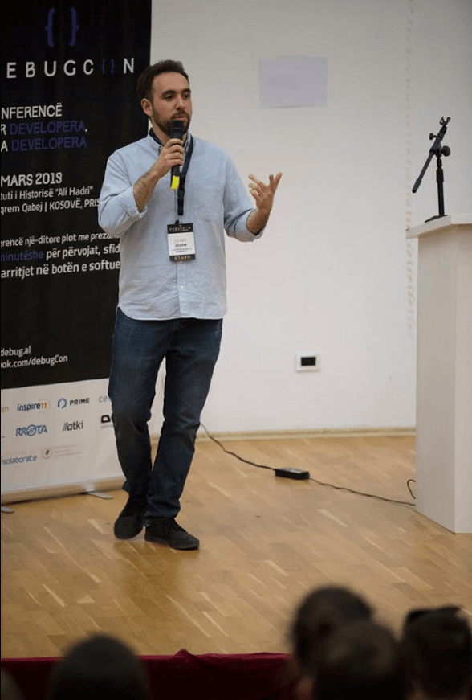

GETTING STARTED
How it all started?
Airways New Zealand contacted us that needed a better solution of how they find information in their physical documentation.
The UX Designer interviewed more than 20 potential users ranging from Air Traffic Controllers, product owners and project managers.
We didn't limit ourselves to only Traffic Controllers manual, we took examples from medicine/engineering documentation as well.
User Experience
Problems
Physical documentation that Traffic Controllers used were too specific for their location and they wanted a quicker solution to switch between other tools such as weather, radar screens to assist aircrafts and the application had to be an application which could only connect securely to their network.
Many Air Traffic Controllers were very familiar with the physical documentation and they knew exactly where to look when the coordinates were provided by the pilot, but they needed a faster solution, a digital solution.
The team worked to a tight 7 week deadline to deliver a design solution which would then be tested and functional/usable by Airways.
Project
Process
Research phase (2 weeks)
The UX Design lead conducted 26 interviews with Controllers who represented the 7 air traffic sectors in New Zealand and observational analysis inside the radar centres They also reviewed previous concepts and conducted competitive design research
Concept phase 2 weeks)
The team then created a user journey, and three low fidelity concepts for feedback and verification with a similar group of controllers/project stakeholders in order to facilitate design/solution preference
Usability testing and design 3 weeks)
Reviewing all feedback, an initial prototype was created and tested with controllers using task cards, moderated by theta’s UX lead We outcome was then turned into a high fidelity design and prototype
DESIGN
Solution
We came up with this logo which was minimal & clean.
The purple colour symbolises 'Coding', 'Hacking' or 'Cyber', which we've chosen to use for the branding.
Debugging is always a bad thing to encounter, but with these colours it will look entertaining and fun even if it's named debugCon.
DESIGN
Solution
As soon as we chosen the final branding style, I've started to develop it with HTML5, CSS3, SASS, GULP.JS, JavaScript & jQuery.
From here, I've decided to use a pattern from www.heropatterns.com
The entire images, icons & loading screen was created with Adobe Illustrator as an SVG.
SVG's were drawn into the website using JavaScript, drawing the path of the SVG when it's outlined.

DESIGN
Badges
Badges were necessary to be used in the conference because the speakers, staff, volunteers and guests could meet each other and see their names, and what they liked about.
We've decided to set them into 3 categories: Support, Speaker & Volunteer.
The supporters were the guests who contributed / donated into the debugCon conference.
There were 24 speakers.


DESIGN
Banner / Sliding banner
The banner was needed to showcase the sponsors, and the debugCon so we've created two, the banner that showcases the sponsors at the bottom and one large one with only the sponsors.
There were many sponsors from:
Gjirafa - www.gjirafa.com
SPRIGS - www.sprigs.com
Universiteti i Prishtines
Inspire11 - www.inspire11.com
Rrota - www.rrota.com
Llatki - www.llatki.com
Celonis - www.celonis.com
Openresearch - www.openresearch.com
DESIGN
Poster Design
Poster was needed to put into some universities to let them know that a coding conference is happening.
The idea was to put inside the UBT University and call for volunteers, and letting the guests know that anyone could go in, so it didn't matter if you were a software developer or not.



CONFERENCE
Attendance
This is why I love working with real people, real data.
The feedback from the people who attended was awesome, and we've developed it in a way that everyone could see the schedule.
